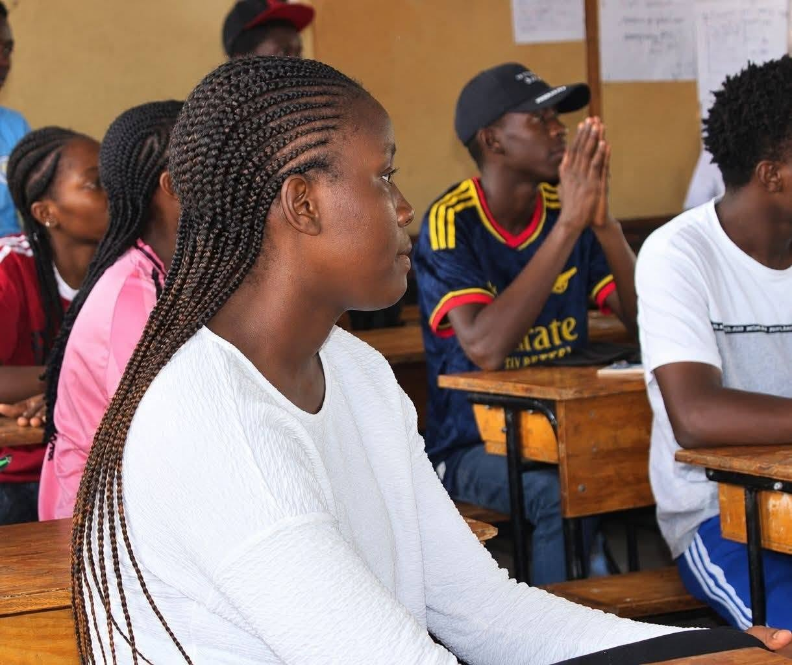
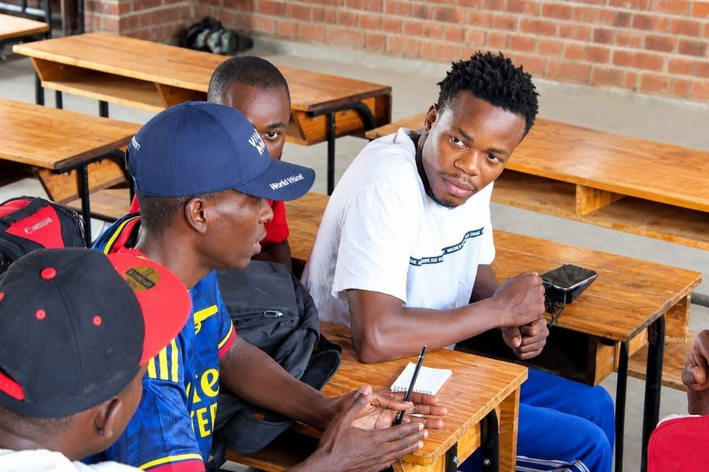

Our mission
To equip young people in Salima with the skills, confidence and support they need to lead change in their own communities — and to make sure their voices are heard where decisions are made.

About us
Salima is not short of young talent. It is short of rooms where that talent is trusted. This is who we are, what we believe, and the problems we are here to meet.

Our story
Salima sits on the edge of Lake Malawi. It is a place of fishing boats, farms, markets and schools — and of young people with ideas that never get funded, heard or tried.
Salima Youth Leadership Initiative began in 2026 with a simple, uncomfortable observation: the people most affected by decisions about the future were the least present when those decisions were made. So we built a table of our own.
We started with what we had — a group chat, a borrowed room, members who were already doing the work quietly in their own corners. The first public promise was almost embarrassingly simple: together we lead, together we change Salima. We still mean it.
Meet the people doing the workMission, vision & values
Short enough to remember. Serious enough to be held to.
To equip young people in Salima with the skills, confidence and support they need to lead change in their own communities — and to make sure their voices are heard where decisions are made.
A Salima where every young person is trusted to lead, where ideas turn into action, and where the district's future is shaped by the people who will live in it.
What the vision means in practice
“Trusted to lead” is not a feeling. It looks like a young person chairing a meeting that adults take seriously. It looks like a member's project getting a small grant and a fair accounting. It looks like a health worker and a student designing a session together, because each has something the other needs.
So we measure ourselves on things we can actually see: skills practised, projects launched, members retained, records kept, and whether the people we serve would invite us back.

The challenge
We are not here to describe young people as a problem. We are here to name the walls around them — and then take them apart, one at a time.
Young people finish school with energy and ideas but no income, network or capital. The gap between school and earning is where many dreams quietly end.
Poverty, long distances and early pregnancy push young people — especially girls — out of school before they finish. Every dropout is a leader the district never gets to see.
Public speaking, planning, budgeting, safeguarding and running a project are rarely taught, yet young people are expected to lead the moment they are handed responsibility.
In community meetings, young people are discussed more than they are heard. Decisions about the future are still made mostly by people who will not live in it.
Floods, dry spells and pressure on the lake hit families who depend on fishing and farming first. Climate stress becomes youth unemployment very quickly.
Most trainings, jobs and grants sit in the cities. For many young people in Salima, the first barrier to opportunity is simply the bus fare to reach it.
How we work
Four steps, repeated honestly. No programme is finished when the workshop ends.
We start with young people, schools, health workers and traditional leaders. The agenda belongs to the community, not to a funder's template.
Public speaking, planning, budgeting, safeguarding, ethics — practised in the room, not lectured from a slide.
Small circles with people who have done the work. Consistent, local, and honest enough to say when something is not working.
Coaching and small resources to turn an idea into a project — then follow-up, because the first month is the hardest.
The story in our logo
Who we work with
We do not do this alone, and we do not want to.
Next step
We need volunteers, mentors, partners and people who will tell us honestly when we are wrong.